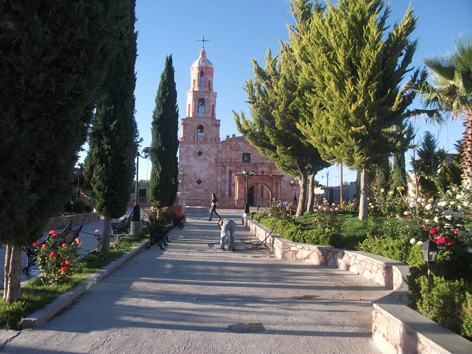
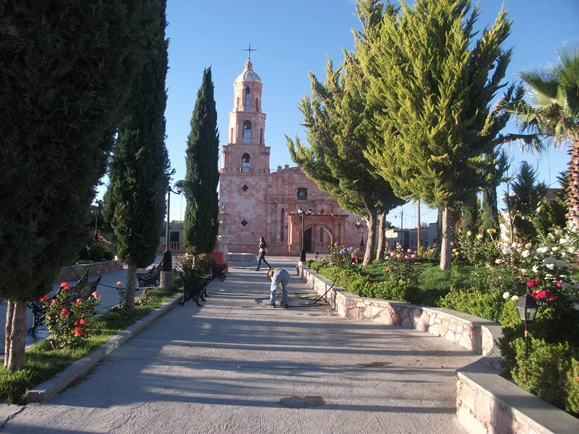
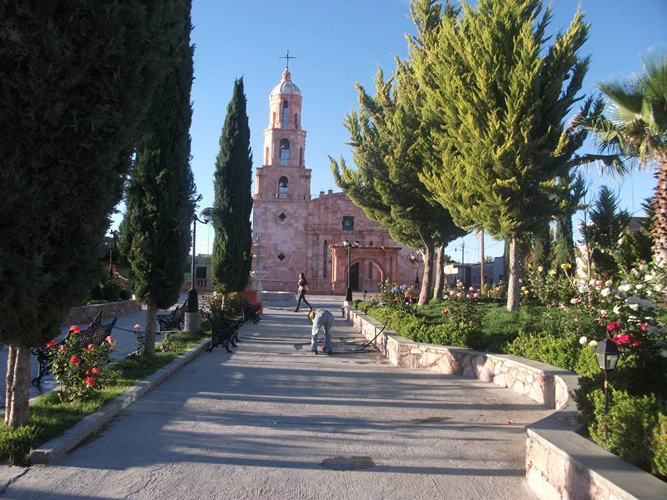

Descubre una nueva forma de gestionar y disfrutar del agua en tu comunidad. System Water facilita el control transparente de pagos y proporciona una experiencia eficiente para todos.

La complejidad y falta de transparencia en la gestion de pagos de agua pueden ser abrumadoras.
Sin embargo con System Water podrán tener la facilidad de observar y tener el control del servicio .
Somos un equipo comprometido con la gestión eficiente del agua.
A través de nuestra dedicación y conocimientos en desarrollo de software, redes, y tecnologías afines, aspiramos a contribuir a comunidades más sostenibles y conscientes del uso del agua. Creemos en el poder de la tecnología para transformar y mejorar la calidad de vida, y nuestro compromiso es proporcionar herramientas que faciliten una gestión hídrica inteligente y accesible para todos. Juntos, construyamos un futuro donde el agua sea gestionada de manera eficaz, transparente y sostenible.

TECMN Loreto Zacatecas
Ing en Sistemas Computacionales
Desarrollador de la WEB, Base de Datos, VPN y Gestion del Servidor
TECNM Loreto Zacatecas
Ing en Sistemas Computacionales
Desarrollo del modelo Caso de Uso y/o Negocio
TECMN Loreto Zacatecas
Ing en Sistemas Computacionales
Modelos Caso de Uso y Economico
TECMN Loreto Zacatecas
Ing en Sistemas Computacionales
Puesto Administrativos
Toda nuestra plataforma fue desarrollada en las aulas del Instituto Tecnologico Superior de Loreto